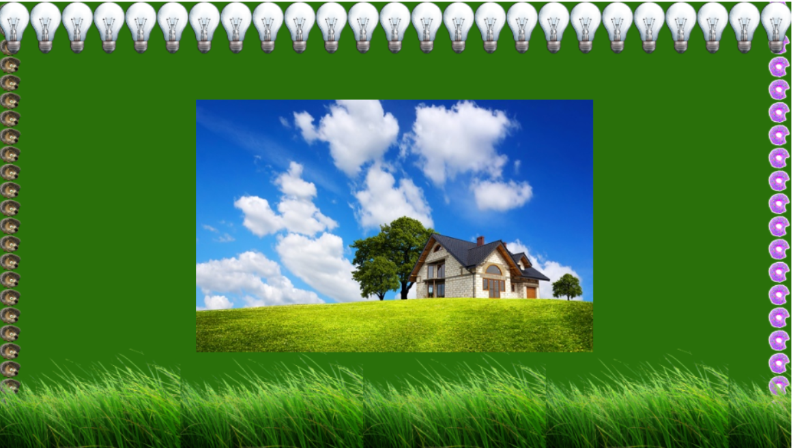

HTML (от англ. HyperText Markup Language — «язык разметки гипертекста»;) — стандартный язык разметки документов во Всемирной паутине. Большинство веб-страниц создаются при помощи языка HTML (или XHTML). Язык HTML интерпретируется браузерами и отображается в виде документа в удобной для человека форме. CSS (англ. Cascading Style Sheets — каскадные таблицы стилей) — формальный язык описания внешнего вида документа, написанного с использованием языка разметки. Преимущественно используется как средство описания, оформления внешнего вида веб-страниц, написанных с помощью языков разметки HTML и XHTML, но может также применяться к любым XML-документам, например, к SVG или XUL. Вроде бы и так понятно, что такое HTML и CSS, но все равно скажу своими словами. HTML — своего рода строительный материал для веб-страничек. Читая специальные тэги (команды, слова, которые имеют особый смысл для браузера) браузер строит страничку с содержимым текстом, картинками и прочим в своем окне. CSS — облицовочный материал, который делает всю красоту.
Скопируйте любой текст с интернета и дайте ему следующие стили:
- размер шрифта 20px;
- межстрочный интервал 25px;
- отступ первой строки 40px;
- межбуквенный интервал 1px;
- любой понравившийся шрифт из семейства шрифтов sans-serif;
- интервалы между словами 5px;
- для блока c текстом задать внутренню тень;
Второй уровень
У вас есть html, котрый нельзя изменить. Используем только стили!
<div class="bg-box"> </div>
С помощью свойства background (и возможности задать несколько background для одного элемента) создаем блок следующего вида:
Ссылки на картинки: Дом, Трава, Лампочка, Еж, Пончик.
Третий уровень
Создайте список из 10 пунктов:
Используя стили для тегов, псевдоселекторов/псевдоклассов, сделайте так чтобы:
- убрать list-style (чтобы перед <li> не было “точек”)
- первый пункт был зеленого цвета (color);
- все четные элементы <li> имели размер шрифта (font-size) 20px, остальные - 18px;
- у каждого третьего элемента (начиная с 1-го !) был желтый фон (background);
- уберите underline (подчеркивание) у ссылок. Пропишите стили на ховер (:hover) на ваше усмотрение
- с помощью псевдоэлемента перед каждым пунктом списка <li> вставить “-”
Результат должен быть таким:
Дополнительное задание (“смогубольше”) - по желанию
Пример 1
Пример 2
Пример 3